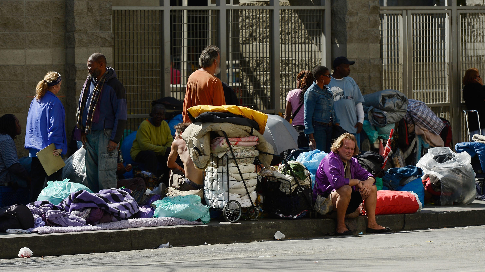

Evironmental Effects
The environmental effects of living on the street aren't new. Not only does homelessness increase poverty and allow for dieases to be spread but it also effects our environment on a deep level.
NBCI a medical institute states"Homeless individuals, already vulnerable to extreme heat, will be adversely affected as temperatures increase.
If climate change causes increased levels of ground-level ozone, the homeless may bear a significant burden of the increase in disease due to their high rates of cardiovascular and respiratory conditions.
The unsheltered homeless population also has an increased risk of exposure to communicable diseases.
According to [the California Department of] Public Health, as of February 2018, California was experiencing the largest person to person hepatitis A outbreak not related to a common source or a contaminated food product
in the United States since the hepatitis A vaccine became available in 1996, and four counties had declared local outbreaks of the disease.